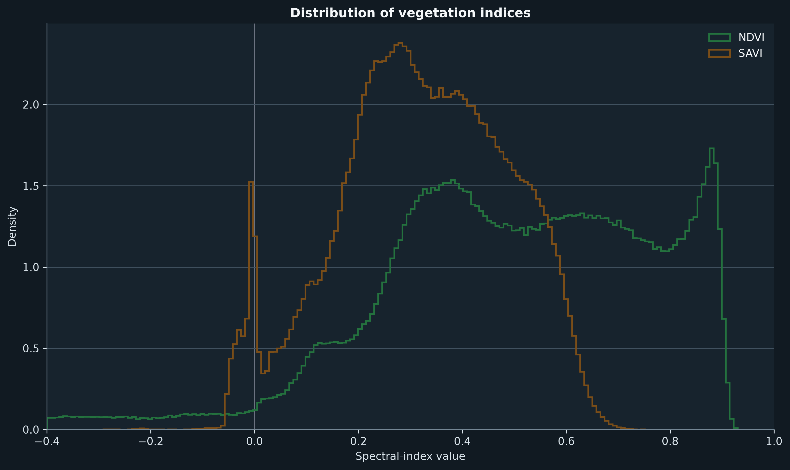
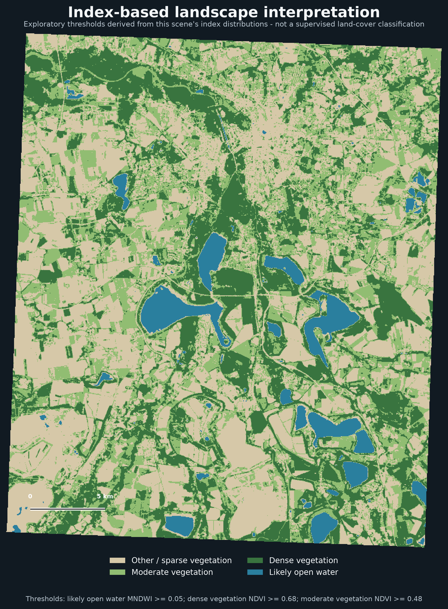

Vegetation and water patterns in Leipzig's post-mining landscape
This independent remote-sensing study examines the spatial distribution of vegetation, surface water and exposed land across Leipzig and the surrounding Neuseenland. A summer Sentinel-2 Level-2A composite from May to September 2026 provides the input for a true-colour visualisation and three complementary spectral indices.
Workflow
Google Earth Engine was used to prepare the Sentinel-2 surface-reflectance composite. Python with Rasterio, NumPy and Matplotlib was then used to inspect raster metadata, apply a percentile stretch to B4/B3/B2 true colour, calculate summary statistics and prepare consistent cartographic outputs.
- NDVI highlights vegetation vigour and cover.
- MNDWI makes positive water responses conspicuous.
- SAVI provides a vegetation response adjusted for soil influence.


View Google Earth Engine script ↗
Exploratory landscape interpretation
The interpretation below is an index-based visual aid, not a supervised land-cover classification. Water, dense vegetation and moderate vegetation are identified with thresholds derived from this scene's own index distributions; they require external validation before being used for analytical claims.


Scope and limitations
Index values are sensitive to atmospheric conditions, seasonal timing, soil background, urban surfaces and shadows. MNDWI-positive pixels are useful water candidates, not a perfect water mask. The analysis is therefore presented as a transparent spectral interpretation rather than ground-truth land cover.
Google Earth Engine · Python · Rasterio · NumPy · Matplotlib · Sentinel-2 Level-2A
Learning attribution: methodology informed by the Spatial Thoughts End-to-End Google Earth Engine course by Ujaval Gandhi.